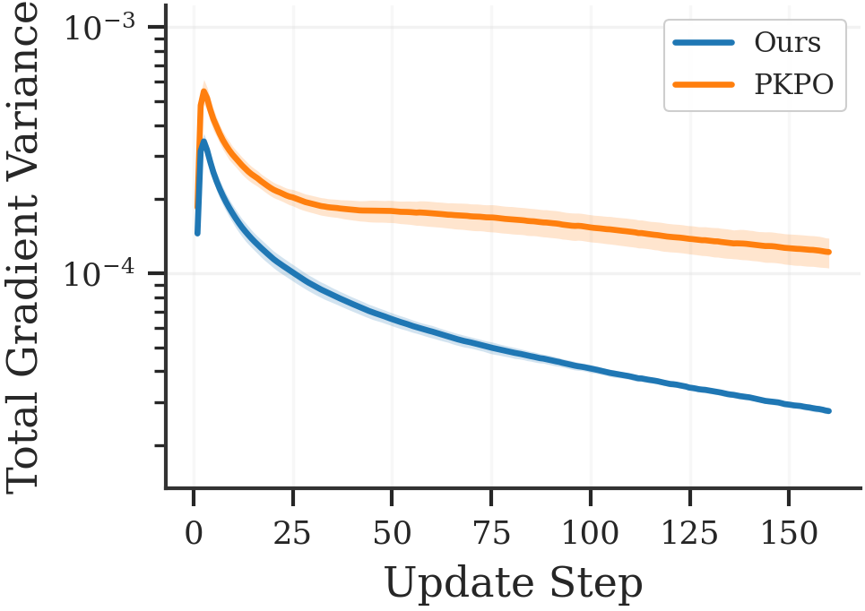
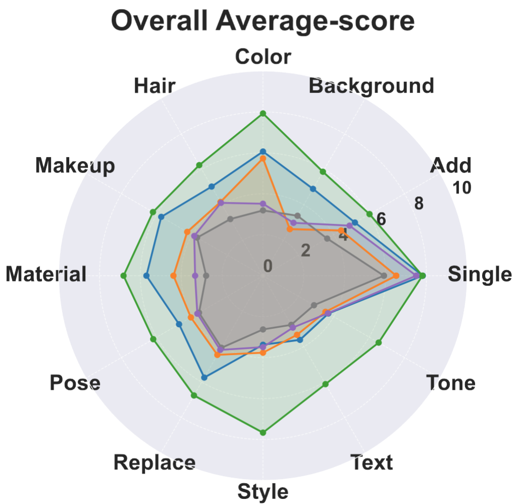
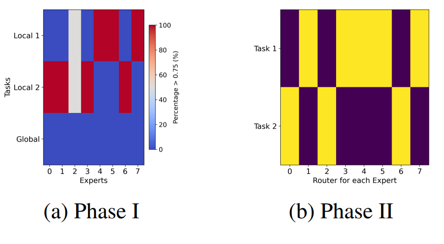

|
Kohsei Matsutani I am an undergraduate student at the University of Tokyo under the supervision of Prof. Yutaka Matsuo. My research interests center on machine learning, currently focusing on the reasoning capabilities of Large Language Models (LLMs). I am currently interning at Liquid AI. |
Research |
|

|
Pass@K Policy Optimization with Unbiased Advantage Estimation
Shota Takashiro, Soichiro Nishimori, Paavo Parmas, Yongmin Kim, Kohsei Matsutani, Gouki Minegishi, Yusuke Iwasawa, Takeshi Kojima, Yutaka Matsuo, Preprint, 2026 arXiv |
|

|
MultiBanana: A Challenging Benchmark for Multi-Reference Text-to-Image Generation
Yuta Oshima, Daiki Miyake, Kohsei Matsutani, Yusuke Iwasawa, Masahiro Suzuki, Yutaka Matsuo, Hiroki Furuta CVPR, 2026 arXiv |

|
RL Squeezes, SFT Expands: A Comparative Study of Reasoning LLMs
Kohsei Matsutani, Shota Takashiro, Gouki Minegishi, Takesi Kojima, Yusuke Iwasawa, Yutaka Matsuo ICLR, 2026 arXiv |
|

|
Mixture of Experts Provably Detect and Learn the Latent Cluster Structure in Gradient-Based Learning
Ryotaro Kawata (*), Kohsei Matsutani (*), Yuri Kinoshita, Naoki Nishikawa, Taiji Suzuki * Equal contribution ICML, 2025 arXiv |